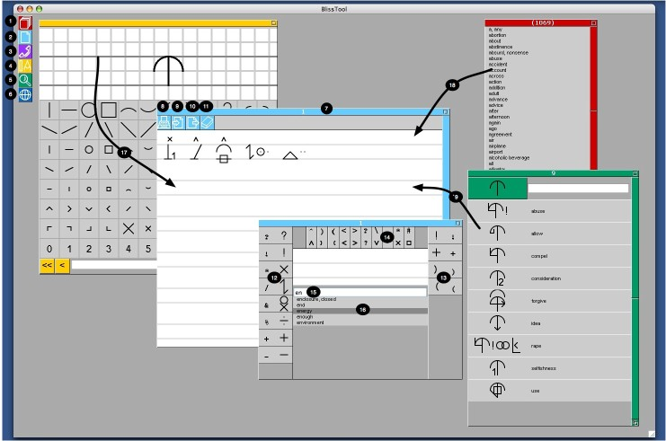

[Home]
[Instant Messaging]
[Page]
[Drawing Board]
[Search]
Page widget

1
Open the dictionary.
2
Open a new page.
3
Open the Instant Messaging widget.
4
Open the drawing board.
5
Open a new search widget.
6
Open the language selection widget.
7
Page widget.
8
Open the Typewriter widget.
9
Paste from the clipboard, convert from xml to bliss.
10
Copy to the clipboard, convert from bliss to xml
11
Delete the content of the page.
12
Click on a button or type the keyboard shortcut
to insert the prefix into the word being composed.
13
Click on a button or type the keyboard shortcut
to insert the suffix into the word being composed.
14
Click on a button or type the keyboard shortcut
to add the indicator to the last character of the word.
15
Type some text to select the words of the dictionary
containing the text. Type backspace to delete the last character of
the word being composed. Type return to send the composed word to the page.
16
Use the up and down arrow keys to select
from the list of choices, then type return to add it to the word
being composed.
17
Drag the mouse from the drawing board to the page
to add the bliss word to the content of the page.
18
Drag the mouse from the dictionary to the page
to add the bliss word to the content of the page.
19
Drag the mouse from the search widget to the page
to add the bliss word to the content of the page.